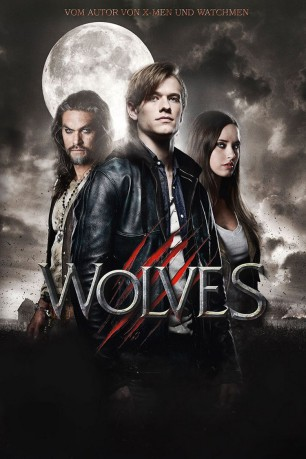

#7429 Wolves - Die Letzten ihrer Art
Alternativ: Wolves
 
 IMDB-Wertung: 5.3 / 10
IMDB-Wertung: 5.3 / 10  Metascore: 0
Metascore: 0 
Der 18-jährige Cayden Richards hat eigentlich alles: Er ist Kapitän des Football-Teams seiner High School, ein Einser-Schüler und mit einem entzückenden Mädchen zusammen. Als aber eines Nachts seine Eltern ermordet werden und er obendrein noch entdeckt, dass er sich in einen wilden Werwolf verwandelt, verlässt er panisch und entschlossen zugleich sein Zuhause, um herauszufinden, was mit ihm geschieht. Schon bald führt ihn sein Weg in die entlegene Stadt Lupine Ridge, in der zwei Werwolf-Clans kurz vor dem Ausbruch eines blutigen Konflikts stehen. Die verfeindeten Gruppen werden angeführt von Connor, dem mächtigen und reinblütigen Alpha-Wolf einer brutalen Sippe, und John Tollerman, einem alten Farmer, der sich verpflichtet hat, die menschlichen Bewohner der Stadt zu beschützen. Cayden kommt bei John unter, doch als er sich in die schöne Angelina verliebt, ist ein Kampf bis zum Tod unausweichlich, ist die junge Frau doch bereits Connor versprochen..
Jahr: 2014
Dauer: 90 Minuten
FSK: 16
Land: Frankreich Studio: SquareOne EntertainmentTonspuren: DTS - ,
Untertitel:
Auflösung: 1080p (1920x1040) Größe: 5703 MB
Genre: Action, Horror
Regisseur: David Hayter
Drehbuch: David Hayter
Soundtrack:
Darsteller:
 Lucas Till als Cayden Richards
Lucas Till als Cayden Richards Stephen McHattie als John Tollerman
Stephen McHattie als John Tollerman John Pyper-Ferguson als Wild Joe
John Pyper-Ferguson als Wild Joe Merritt Patterson als Angelina Timmins
Merritt Patterson als Angelina Timmins Jason Momoa als Connor
Jason Momoa als Connor- Janet-Laine Green als Clara Tollerman
 Melanie Scrofano als Gail Timmins
Melanie Scrofano als Gail Timmins Adam Butcher als Deke
Adam Butcher als Deke Philip Maurice Hayes als Kino
Philip Maurice Hayes als Kino- Brandon McGibbon als Carter
- Miriam McDonald als Haley
 Jennifer Hale als Janice Richards
Jennifer Hale als Janice Richards- Kaitlyn Leeb als Lisa Stewart
- Adrienne Kress als Dr. Ceciley Lawrence
- Tommy Gunn als Biker #1 - Robbie
- Casey Hudecki als Truck Stop Girl
- Jonathan Llyr als Larson
- Adam MacDonald als Marty
- Maxwell McCabe-Lokos als Morrow
- Matthew Currie Holmes als Setter
- Glen Gould als Dart Player
- Kyle Shapiro als Karl
 Simon Northwood als Fleas
Simon Northwood als Fleas George Tchortov als Skip
George Tchortov als Skip- Eli Martyr als Kitt
 Alain Moussi als Dobie
Alain Moussi als Dobie- Dionne b Warren als Police Officer
- Jesse Daniel Glass als (uncredited
- Stephen Sparks als Dean Richards
- Daniel Kelly als Brad Lewis
- Todd Dulmage als Referee
- Sterling Jarvis als Principal
- Jung-Lung Kim als Police Officer
- Robert Homer Mollohan als Biker #2 - Animal
- Ryan Brownlee als Bartender
- Eric Trask als Mayor Robinson
- Eric Daniel als Warg
- Jonny Caines als Rackham
- Dean Copkov als Trapper
- Leland Tilden als Mange
- Issey Abraha als Football Fan #1
- Wayne Curnew als Pool Playing Biker #1
- Azra Valani als Actor
- Ron Laugher als Pool Playing Biker , uncredited
Datei: X:\2014(N-Z)\Wolves - Die Letzten ihrer Art (2014, FSK16, 1920x1040).mkv seit 10.11.2017
Festplatte: HD 2013(I-Z)-2014(A-Z)
 Es gibt insgesamt 163 Filme in der Gruppe '2014(N-Z)'
Es gibt insgesamt 163 Filme in der Gruppe '2014(N-Z)'